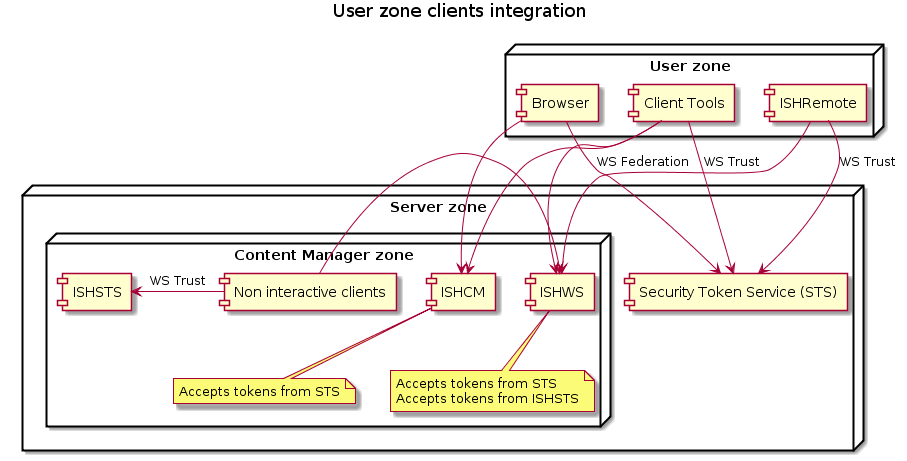
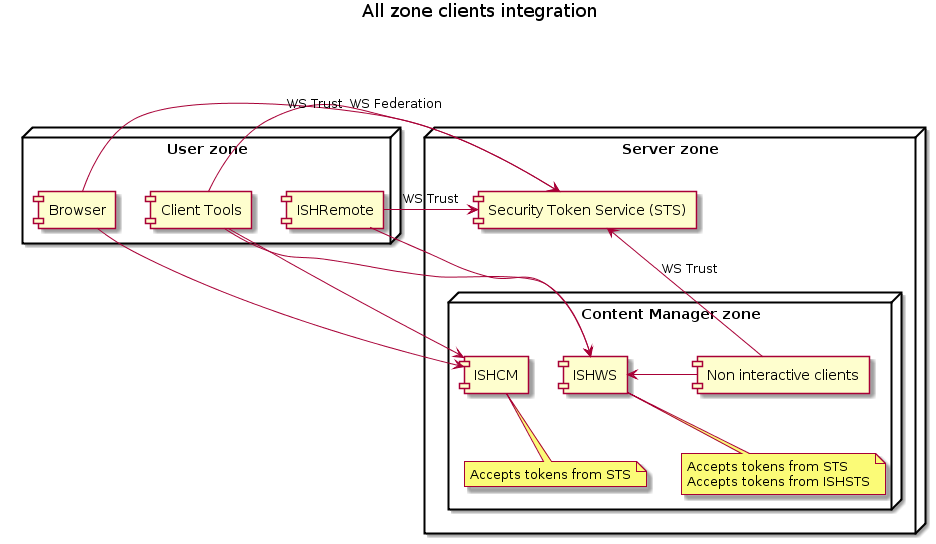

Integrating with Security Token Service (STS)
This article explains how to use the module's cmdlets to integrate with a Security Token Service also referred to as STS.
Acknowledgements
When a service provider integrated with an STS, it requires some information exchange. In the context of this article the service provider is Content Manager
Content Manager requires knowledge of the following information:
- WS Federation endpoint
- WS Trust endpoint
- WS Trust binding type
- WS Trust Metadata Exchange endpoint
- Token signing certificate thumbprint
The following values assume an STS at sts.example.com
#Issuer name
$issuerName="Example STS (20160101)"
#WS Federation endpoint
$wsFederationUri="https://sts.example.com/wsfed"
#WS Trust endpoint
$wsTrustUri="https://sts.example.com/wstrust/UsernameMixed"
#WS Trust metadata exchange endpoint
$wsTrustMexUri="https://sts.example.com/wstrust/mex"
#The authentication type
$bindingType="UsernameMixed"
#Token signing thumbprint
$tokenSigningCertificateThumbprint="2509fb22f7671aea2d0a28ae80516f390de0ca21"
When the authentication type is Windows then the values change like this
#WS Trust endpoint
$wsTrustUri="sts.example.com/wstrust/WindowsMixed"
#The authentication type
$bindingType="WindowsMixed"
STS required knowledge of the following information:
- The endpoints to create relying parties for
- ISHCM e.g.
https://ish.example.com/ISHCM - ISHWS e.g.
https://ish.example.com/ISHWS. Although it is not required it is recommended to create relying parties for each .svc endpoint in ISHWS e.g.https://ish.example.com/ISHWS/Wcf/API25/Application.svc
- ISHCM e.g.
- For each ISHWS based identifier the public key to encrypt the tokens.
- Expected token claim composition. This drives the claims transformation rules.
Implementing the integration on Content Manager
There are two kind of integrations:
- Only the clients not in the server zone use the STS at
sts.example.comto authenticate. All clients within the server zone continue using the internal ISHSTS. - All clients in the user and server zone use the STS at
sts.example.comto authenticate.
The differences are shown in the following images 
User zone integration
Set deploymentName variable
First set deploymentName variable.
$deploymentName="InfoShare"
Then
# Set WS Federation integration
Set-ISHIntegrationSTSWSFederation -ISHDeployment $deploymentName -Endpoint $wsFederationUri
# Set WS Trust integration
Set-ISHIntegrationSTSWSTrust -ISHDeployment $deploymentName -Endpoint $wsTrustUri -MexEndpoint $wsTrustMexUri -BindingType $bindingType
# Set Token signing certificate
Set-ISHIntegrationSTSCertificate -ISHDeployment $deploymentName -Issuer $issuerName -Thumbprint $tokenSigningCertificateThumbprint
All zone integration
Set deploymentName variable
First set deploymentName variable.
$deploymentName="InfoShare"
The internal clients are all non interactive. That means they required a pre-configured set of credentials to use during authentication.
When these clients are redirected to the STS at sts.example.com, then there are two options
- When the authentication type is windows then the
osusercredential set will be used - When the authentication type is username/password then a the
-ActorUsernameand-ActorPasswordmust be provided.
This is an example for a username/password authentication
# Set WS Federation integration
Set-ISHIntegrationSTSWSFederation -ISHDeployment $deploymentName -Endpoint $wsFederationUri
# Set WS Trust integration
Set-ISHIntegrationSTSWSTrust -ISHDeployment $deploymentName -Endpoint $wsTrustUri -MexEndpoint $wsTrustMexUri -BindingType $bindingType -IncludeInternalClients
# Set Token signing certificate
Set-ISHIntegrationSTSCertificate -ISHDeployment $deploymentName -Issuer $issuerName -Thumbprint $tokenSigningCertificateThumbprint
This is an example for a windows authentication
# Set WS Federation integration
Set-ISHIntegrationSTSWSFederation -ISHDeployment $deploymentName -Endpoint $wsFederationUri
# Set WS Trust integration
Set-ISHIntegrationSTSWSTrust -ISHDeployment $deploymentName -Endpoint $wsTrustUri -MexEndpoint $wsTrustMexUri -BindingType $bindingType -IncludeInternalClients
# Set Token signing certificate
Set-ISHIntegrationSTSCertificate -ISHDeployment $deploymentName -Issuer $issuerName -Thumbprint $tokenSigningCertificateThumbprint
Implement the integration on the Security Token Service
For every STS the configuration is different. Therefore the module's Save-ISHIntegrationSTSConfigurationPackage generates a set of information that describe the important information for configuring Content Manager's relying parties.
$filename="$(Get-Date -Format "yyyyMMdd").IntegrationISH.zip"
Save-ISHIntegrationSTSConfigurationPackage -ISHDeployment $deploymentName -FileName $filename
Inside the zip file you will find two files
CM Security Token Service Requirements.mdthat is a markdown file with the specific deployment information.ishws.certhat is the public key of the ISHWS service certificate. This was added for your convenience.
Enable authentication with Content Manager internal users.
While the deployment is integrated with an external security token service (STS), it could be requested that the system allows access for internal users without modifying the integration. An internal user is one that has username and password in the Content Manager database and the credential will be validated by ISHSTS.
# Just Content Manager (ISH)
Enable-ISHIntegrationSTSInternalAuthentication -ISHDeployment $deploymentName
If the deployment is integrated with Content Delivery then provide the necessary values like this:
# When the deployment is integrated with a Content Delivery (LC)
Enable-ISHIntegrationSTSInternalAuthentication -ISHDeployment $deployment -LCHost "lc.example.com" -LCWebAppName "ContentDelivery"
Enable-ISHIntegrationSTSInternalAuthentication will enable a special url at https://ish.example.com/ISHWS/Internal/.
Provide this url to any user that wishes to login with internal users.
To disable this mode use Disable-ISHIntegrationSTSInternalAuthentication.
Disable-ISHIntegrationSTSInternalAuthentication -ISHDeployment $deploymentName